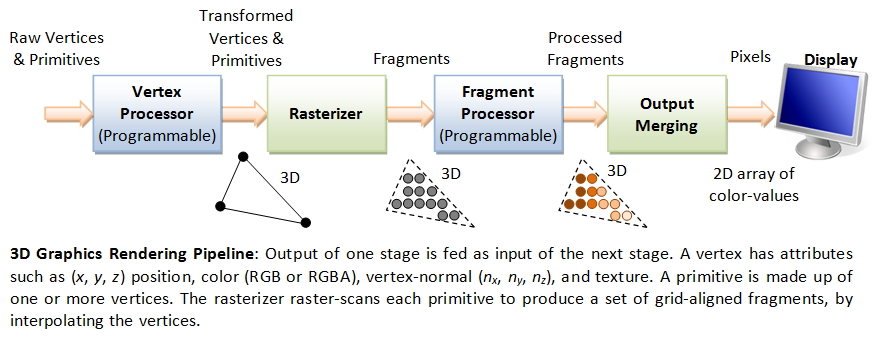
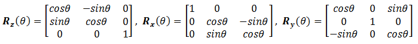

Computer Graphics Hardware

GPU (Graphics Processing Unit)
Modern day computer has dedicated Graphics Processing Unit (GPU) to produce images for the display, with its own graphics memory (or Video RAM or VRAM).
Pixels and Frame

All modern displays are raster-based. A raster is a 2D rectangular grid of pixels (or picture elements). A pixel has two properties: a color and a position. Color is expressed in RGB (Red-Green-Blue) components - typically 8 bits per component or 24 bits per pixel (or true color). The position is expressed in terms of (x, y) coordinates. The origin (0, 0) is located at the top-left corner, with x-axis pointing right and y-axis pointing down. This is different from the conventional 2D Cartesian coordinates, where y-axis is pointing upwards.
The number of color-bits per pixel is called the depth (or precision) of the display. The number of rows by columns of the rectangular grid is called the resolution of the display, which can range from 640x480 (VGA), 800x600 (SVGA), 1024x768 (XGA) to 1920x1080 (FHD), or even higher.
Frame Buffer and Refresh Rate

The color values of the pixels are stored in a special part of graphics memory called frame buffer. The GPU writes the color value into the frame buffer. The display reads the color values from the frame buffer row-by-row, from left-to-right, top-to-bottom, and puts each of the values onto the screen. This is known as raster-scan. The display refreshes its screen several dozen times per second, typically 60Hz for LCD monitors and higher for CRT tubes. This is known as the refresh rate.
A complete screen image is called a frame.
Double Buffering and VSync
While the display is reading from the frame buffer to display the current frame, we might be updating its contents for the next frame (not necessarily in raster-scan manner). This would result in the so-called tearing, in which the screen shows parts of the old frame and parts of the new frame.
This could be resolved by using so-called double buffering. Instead of using a single frame buffer, modern GPU uses two of them: a front buffer and a back buffer. The display reads from the front buffer, while we can write the next frame to the back buffer. When we finish, we signal to GPU to swap the front and back buffer (known as buffer swap or page flip).
Double buffering alone does not solve the entire problem, as the buffer swap might occur at an inappropriate time, for example, while the display is in the middle of displaying the old frame. This is resolved via the so-called vertical synchronization (or VSync) at the end of the raster-scan. When we signal to the GPU to do a buffer swap, the GPU will wait till the next VSync to perform the actual swap, after the entire current frame is displayed.
The most important point is: When the VSync buffer-swap is enabled, you cannot refresh the display faster than the refresh rate of the display!!! For the LCD/LED displays, the refresh rate is typically locked at 60Hz or 60 frames per second, or 16.7 milliseconds for each frame. Furthermore, if you application refreshes at a fixed rate, the resultant refresh rate is likely to be an integral factor of the display's refresh rate, i.e., 1/2, 1/3, 1/4, etc.
3D Graphics Rendering Pipeline
A pipeline, in computing terminology, refers to a series of processing stages in which the output from one stage is fed as the input of the next stage, similar to a factory assembly line or water/oil pipe. With massive parallelism, pipeline can greatly improve the overall throughput.
In computer graphics, rendering is the process of producing image on the display from model description.
The 3D Graphics Rendering Pipeline accepts description of 3D objects in terms of vertices of primitives (such as triangle, point, line and quad), and produces the color-value for the pixels on the display.
The 3D graphics rendering pipeline consists of the following main stages:
- Vertex Processing: Process and transform individual vertices.
- Rasterization: Convert each primitive (connected vertices) into a set of fragments. A fragment can be treated as a pixel in 3D spaces, which is aligned with the pixel grid, with attributes such as position, color, normal and texture.
- Fragment Processing: Process individual fragments.
- Output Merging: Combine the fragments of all primitives (in 3D space) into 2D color-pixel for the display.
In modern GPUs, the vertex processing stage and fragment processing stage are programmable. You can write programs, known as vertex shader and fragment shader to perform your custom transform for vertices and fragments. The shader programs are written in C-like high level languages such as GLSL (OpenGL Shading Language), HLSL (High-Level Shading Language for Microsoft Direct3D), or Cg (C for Graphics by NVIDIA).
On the other hand, the rasterization and output merging stages are not programmable, but configurable - via configuration commands issued to the GPU.
Vertices, Primitives, Fragment and Pixels
3D Graphics Coordinate Systems

OpenGL adopts the Right-Hand Coordinate System (RHS). In the RHS, the x-axis is pointing right, y-axis is pointing up, and z-axis is pointing out of the screen. With your right-hand fingers curving from the x-axis towards the y-axis, the thumb is pointing at the z-axis. RHS is counter-clockwise (CCW). The 3D Cartesian Coordinates is a RHS.
Some graphics software (such as Microsoft Direct3D) use Left-hand System (LHS), where the z-axis is inverted. LHS is clockwise (CW). In this article, we shall adopt the RHS and CCW used in OpenGL.
Primitives
The inputs to the Graphics Rendering Pipeline are geometric primitives (such as triangle, point, line or quad), which is formed by one or more vertices.
OpenGL supports three classes of geometric primitives: points, line segments, and closed polygons. They are specified via vertices. Each vertex is associated with its attributes such as the position, color, normal and texture. OpenGL provides 10 primitives as shown. Sphere, 3D box and pyramid are not primitives. They are typically assembled using primitive triangle or quad.

Vertices
Recall that a primitive is made up of one or more vertices. A vertex, in computer graphics, has these attributes:
- Position in 3D space V=(x, y, z): typically expressed in floating point numbers.
- Color: expressed in RGB (Red-Green-Blue) or RGBA (Red-Green-Blue-Alpha) components. The component values are typically normalized to the range of 0.0 and 1.0 (or 8-bit unsigned integer between 0 and 255). Alpha is used to specify the transparency, with alpha of 0 for totally transparent and alpha of 1 for opaque.
- Vertex-Normal N=(nx, ny, nz): We are familiar with the concept of surface normal, where the normal vector is perpendicular to the surface. In computer graphics, however, we need to attach a normal vector to each vertex, known as vertex-normal. Normals are used to differentiate the front- and back-face, and for other processing such as lighting. Right-hand rule (or counter-clockwise) is used in OpenGL. The normal is pointing outwards, indicating the outer surface (or front-face).
- Texture T=(s, t): In computer graphics, we often wrap a 2D image to an object to make it seen realistic. A vertex could have a 2D texture coordinates (s, t), which provides a reference point to a 2D texture image.
- Others.
OpenGL Primitives and Vertices

As an example, the following OpenGL code segment specifies a color-cube, center at the origin.
To create a geometric object or model, we use a pair of glBegin(PrimitiveType) and glEnd() to enclose the vertices that form the model. For primitiveType that ends with 'S' (e.g., GL_QUADS), we can define multiple shapes of the same type.
Each of the 6 faces is a primitive quad (GL_QUAD). We first set the color via glColor3f(red, green, blue). This color would be applied to all subsequent vertices until it is overridden. The 4 vertices of the quad are specified via glVertex3f(x, y, z), in counter-clockwise manner such that the surface-normal is pointing outwards, indicating its front-face. All four vertices has this surface-normal as its vertex-normal.
glBegin(GL_QUADS); // of the color cube // Top-face glColor3f(0.0f, 1.0f, 0.0f); // green glVertex3f(1.0f, 1.0f, -1.0f); glVertex3f(-1.0f, 1.0f, -1.0f); glVertex3f(-1.0f, 1.0f, 1.0f); glVertex3f(1.0f, 1.0f, 1.0f); // Bottom-face glColor3f(1.0f, 0.5f, 0.0f); // orange glVertex3f(1.0f, -1.0f, 1.0f); glVertex3f(-1.0f, -1.0f, 1.0f); glVertex3f(-1.0f, -1.0f, -1.0f); glVertex3f(1.0f, -1.0f, -1.0f); // Front-face glColor3f(1.0f, 0.0f, 0.0f); // red glVertex3f(1.0f, 1.0f, 1.0f); glVertex3f(-1.0f, 1.0f, 1.0f); glVertex3f(-1.0f, -1.0f, 1.0f); glVertex3f(1.0f, -1.0f, 1.0f); // Back-face glColor3f(1.0f, 1.0f, 0.0f); // yellow glVertex3f(1.0f, -1.0f, -1.0f); glVertex3f(-1.0f, -1.0f, -1.0f); glVertex3f(-1.0f, 1.0f, -1.0f); glVertex3f(1.0f, 1.0f, -1.0f); // Left-face glColor3f(0.0f, 0.0f, 1.0f); // blue glVertex3f(-1.0f, 1.0f, 1.0f); glVertex3f(-1.0f, 1.0f, -1.0f); glVertex3f(-1.0f, -1.0f, -1.0f); glVertex3f(-1.0f, -1.0f, 1.0f); // Right-face glColor3f(1.0f, 0.0f, 1.0f); // magenta glVertex3f(1.0f, 1.0f, -1.0f); glVertex3f(1.0f, 1.0f, 1.0f); glVertex3f(1.0f, -1.0f, 1.0f); glVertex3f(1.0f, -1.0f, -1.0f); glEnd(); // of the color cube
Indexed Vertices
Primitives often share vertices. Instead of repeatedly specifying the vertices, it is more efficient to create an index list of vertices, and use the indexes in specifying the primitives.
For example, the following code fragment specifies a pyramid, which is formed by 5 vertices. We first define 5 vertices in an index array, followed by their respectively color. For each of the 5 faces, we simply provide the vertex index and color index.
float[] vertices = { // 5 vertices of the pyramid in (x,y,z)
-1.0f, -1.0f, -1.0f, // 0. left-bottom-back
1.0f, -1.0f, -1.0f, // 1. right-bottom-back
1.0f, -1.0f, 1.0f, // 2. right-bottom-front
-1.0f, -1.0f, 1.0f, // 3. left-bottom-front
0.0f, 1.0f, 0.0f // 4. top
};
float[] colors = { // Colors of the 5 vertices in RGBA
0.0f, 0.0f, 1.0f, 1.0f, // 0. blue
0.0f, 1.0f, 0.0f, 1.0f, // 1. green
0.0f, 0.0f, 1.0f, 1.0f, // 2. blue
0.0f, 1.0f, 0.0f, 1.0f, // 3. green
1.0f, 0.0f, 0.0f, 1.0f // 4. red
};
byte[] indices = { // Vertex indices of the 4 Triangles
2, 4, 3, // front face (CCW)
1, 4, 2, // right face
0, 4, 1, // back face
4, 0, 3 // left face
};
// Transfer the arrays to vertex-buffer, color-buffer and index-buffer.
// Draw the primitives (triangle) from the index buffer
Pixel vs. Fragment
Pixels refers to the dots on the display, which are aligned in a 2-dimensional grid of a certain rows and columns corresponding to the display's resolution. A pixel is 2-dimensional, with a (x, y) position and a RGB color value (there is no alpha value for pixels). The purpose of the Graphics Rendering Pipeline is to produce the color-value for all the pixels for displaying on the screen, given the input primitives.

In order to produce the grid-aligned pixels for the display, the rasterizer of the graphics rendering pipeline, as its name implied, takes each input primitive and perform raster-scan to produce a set of grid-aligned fragments enclosed within the primitive. A fragment is 3-dimensional, with a (x, y, z) position. The (x, y) are aligned with the 2D pixel-grid. The z-value (not grid-aligned) denotes its depth. The z-values are needed to capture the relative depth of various primitives, so that the occluded objects can be discarded (or the alpha channel of transparent objects processed) in the output-merging stage.
Fragments are produced via interpolation of the vertices. Hence, a fragment has all the vertex's attributes such as color, fragment-normal and texture coordinates.
In modern GPU, vertex processing and fragment processing are programmable. The programs are called vertex shader and fragment shader.
(Direct3D uses the term "pixel" for "fragment".)
Vertex Processing
Coordinates Transformation
The process used to produce a 3D scene on the display in Computer Graphics is like taking a photograph with a camera. It involves four transformations:
- Arrange the objects (or models, or avatar) in the world (Model Transformation or World transformation).
- Position and orientation the camera (View transformation).
- Select a camera lens (wide angle, normal or telescopic), adjust the focus length and zoom factor to set the camera's field of view (Projection transformation).
- Print the photo on a selected area of the paper (Viewport transformation) - in rasterization stage
A transform converts a vertex V from one space (or coordinate system) to another space V'. In computer graphics, transform is carried by multiplying the vector with a transformation matrix, i.e., V' = M V.
Model Transform (or Local Transform, or World Transform)

Each object (or model or avatar) in a 3D scene is typically drawn in its own coordinate system, known as its model space (or local space, or object space). As we assemble the objects, we need to transform the vertices from their local spaces to the world space, which is common to all the objects. This is known as the world transform. The world transform consists of a series of scaling (scale the object to match the dimensions of the world), rotation (align the axes), and translation (move the origin).
Rotation and scaling belong to a class of transformation called linear transformation (by definition, a linear transformation preserves vector addition and scalar multiplication). Linear transform and translation form the so-called affine transformation. Under an affine transformation, a straight line remains a straight line and ratios of distances between points are preserved.
In OpenGL, a vertex V at (x, y, z) is represented as a 3x1 column vector:

Other systems, such as Direct3D, use a row vector to represent a vertex.
Scaling
3D scaling can be represented in a 3x3 matrix:
where αx, αy and αz represent the scaling factors in x, y and z direction, respectively. If all the factors are the same, it is called uniform scaling.
We can obtain the transformed result V' of vertex V via matrix multiplication, as follows:

Rotation
3D rotation operates about an axis of rotation (2D rotation operates about a center of rotation). 3D Rotations about the x, y and z axes for an angle θ (measured in counter-clockwise manner) can be represented in the following 3x3 matrices:
The rotational angles about x, y and z axes, denoted as θx, θy and θz, are known as Euler angles, which can be used to specify any arbitrary orientation of an object. The combined transform is called Euler transform.
[TODO] Link to Proof and illustration
Translation
Translation does not belong to linear transform, but can be modeled via a vector addition, as follows:
Fortunately, we can represent translation using a 4x4 matrices and obtain the transformed result via matrix multiplication, if the vertices are represented in the so-called 4-component homogeneous coordinates (x, y, z, 1), with an additional forth w-component of 1. We shall describe the significance of the w-component later in projection transform. In general, if the w-component is not equal to 1, then (x, y, z, w) corresponds to Cartesian coordinates of (x/w, y/w, z/w). If w=0, it represents a vector, instead of a point (or vertex).
Using the 4-component homogeneous coordinates, translation can be represented in a 4x4 matrix, as follows:
The transformed vertex V' can again be computed via matrix multiplication:
[TODO] Link to homogeneous coordinates
Summary of Affine Transformations
We rewrite the scaling and rotation into 4x4 matrices using the homogenous coordinates.
Successive Transforms
A series of successive affine transforms (T1, T2, T3, ...) operating on a vertex V can be computed via concatenated matrix multiplications V' = ...T3T2T1V. The matrices can be combined before applying to the vertex because matrix multiplication is associative, i.e., T3 (T2 (T1 V) ) = ( T3T2T1 ) V.
Example
[TODO]
Transformation of Vertex-Normal
Recall that a vector has a vertex-normal, in addition to (x, y, z) position and color.
Suppose that M is a transform matrix, it can be applied to vertex-normal only if the transforms does not include non-uniform scaling. Otherwise, the transformed normal will not be orthogonal to the surface. For non-uniform scaling, we could use (M-1)T as the transform matrix, which ensure that the transformed normal remains orthogonal.
[TODO] Diagram and more
[TODO] Link to Proof
View Transform
After the world transform, all the objects are assembled into the world space. We shall now place the camera to capture the view.

Positioning the Camera
In 3D graphics, we position the camera onto the world space by specifying three view parameters: EYE, AT and UP, in world space.
- The point EYE (ex, ey, ez) defines the location of the camera.
- The vector AT (ax, ay, az) denotes the direction where the camera is aiming at, usually at the center of the world or an object.
- The vector UP (ux, uy, uz) denotes the upward orientation of the camera roughly. UP is typically coincided with the y-axis of the world space. UP is roughly orthogonal to AT, but not necessary. As UP and AT define a plane, we can construct an orthogonal vector to AT in the camera space.
Notice that the 9 values actually produce 6 degrees of freedom to position and orientate the camera, i.e., 3 of them are not independent.
OpenGL
In OpenGL, we can use the GLU function gluLookAt() to position the camera:
void gluLookAt(GLdouble xEye, GLdouble yEye, GLdouble zEye,
GLdouble xAt, GLdouble yAt, GLdouble zAt,
GLdouble xUp, GLdouble yUp, GLdouble zUp)
The default settings of gluLookAt() is:
gluLookAt(0.0, 0.0, 0.0, 0.0, 0.0, -100.0, 0.0, 1.0, 0.0)
That is, the camera is positioned at the origin (0, 0, 0), aimed into the screen (negative z-axis), and faced upwards (positive y-axis). To use the default settings, you have to place the objects at negative z-values.
Computing the Camera Coordinates
From EYE, AT and UP, we first form the coordinate (xc, yc, zc) for the camera, relative to the world space. We fix zc to be the opposite of AT, i.e., AT is pointing at the -zc. We can obtain the direction of xc by taking the cross-product of AT and UP. Finally, we get the direction of yc by taking the cross-product of xc and zc. Take note that UP is roughly, but not necessarily, orthogonal to AT.

Transforming from World Space to Camera Space
Now, the world space is represented by standard orthonormal bases (e1, e2, e3), where e1=(1, 0, 0), e2=(0, 1, 0) and e3=(0, 0, 1), with origin at O=(0, 0, 0). The camera space has orthonormal bases (xc, yc, zc) with origin at EYE=(ex, ey, ez).
It is much more convenience to express all the coordinates in the camera space. This is done via view transform.
The view transform consists of two operations: a translation (for moving EYE to the origin), followed by a rotation (to axis the axes):
The View Matrix
We can combine the two operations into one single View Matrix:

Model-View Transform
In Computer Graphics, moving the objects relative to a fixed camera (Model transform), and moving the camera relative to a fixed object (View transform) produce the same image, and therefore are equivalent. OpenGL, therefore, manages the Model transform and View transform in the same manner on a so-called Model-View matrix. Projection transformation (in the next section) is managed via a Projection matrix.
Projection Transform - Perspective Projection
Once the camera is positioned and oriented, we need to decide what it can see (analogous to choosing the camera's field of view by adjusting the focus length and zoom factor), and how the objects are projected onto the screen. This is done by selecting a projection mode (perspective or orthographic) and specifying a viewing volume or clipping volume. Objects outside the clipping volume are clipped out of the scene and cannot be seen.
View Frustum in Perspective View
The camera has a limited field of view, which exhibits a view frustum (truncated pyramid), and is specified by four parameters: fovy, aspect, zNear and zFar.
- Fovy: specify the total vertical angle of view in degrees.
- Aspect: the ratio of width vs. height. For a particular z, we can get the height from the fovy, and then get the width from the aspect.
- zNear; the near plane.
- zFar: the far plane.
The camera space (xc, yc, zc) is renamed to the familiar (x, y, z) for convenience.

The projection with view frustum is known as perspective projection, where objects nearer to the COP (Center of Projection) appear larger than objects further to the COP of the same size.
An object outside the view frustum is not visible to the camera. It does not contribute to the final image and shall be discarded to improve the performance. This is known as view-frustum culling. If an object partially overlaps with the view frustum, it will be clipped in the later stage.
OpenGL
In OpenGL, there are two functions for choosing the perspective projection and setting its clipping volume:
- More commonly-used GLU function
gluPerspective():void gluPerspective(GLdouble fovy, GLdouble aspectRatio, GLdouble zNear, GLdouble zFar) // fovy is the angle between the bottom and top of the projectors; // aspectRatio is the ratio of width and height of the front (and also back) clipping plane; // zNear and zFar specify the front and back clipping planes. - Core GL function
glFrustum():void glFrustum(GLdouble xLeft, GLdouble xRight, GLdouble yBottom, GLdouble yTop, GLdouble zNear, GLdouble zFar) // xLeft, xRight, yBottom and yTop specifies the front clipping plane. // zNear and zFar specify the positions of the front and back clipping planes.
Clipping-Volume Cuboid
Next, we shall apply a so-called projection matrix to transform the view-frustum into a axis-aligned cuboid clipping-volume of 2x2x1 centered on the near plane, as illustrated. The near plane has z=0, whereas the far plane has z=-1. The planes have dimension of 2x2, with range from -1 to +1.

The Perspective Projection Matrix
The projection matrix is given by:
Take note that the last row of the matrix is no longer [0 0 0 1]. With input vertex of (x, y, z, 1), the resultant w-component would not be 1. We need to normalize the resultant homogeneous coordinates (x, y, z, w) to (x/w, y/w, z/w, 1) to obtain position in 3D space. (It is amazing that homogeneous coordinates can be used for translation, as well as the perspective projection.)
[TODO] Link to Proof
The final step is to flip the z-axis, so that the near plane is still located at z=0, but the far plane is flipped and located at z=1 (instead of z=-1). In other words, the larger the z, the further is the object. To perform flipping, we can simply negate the third row of the projection matrix.

After the flip, the coordinate system is no longer a Right-Hand System (RHS), but becomes a Left-hand System (LHS).
[TODO] Link to Proof
OpenGL's Model-View Matrix and Projection Matrix
OpenGL manages the transforms via two matrices: a model-view matrix (GL_MODELVIEW for handling model and view transforms) and a projection matrix (GL_PROJECTION for handling projection transform). These two matrices can be manipulated independently.
We need to first select the matrix for manipulation via:
void glMatrixMode(GLenum matrix) // Select matrix for manipulating, e.g., GL_PROJECTION, GL_MODELVIEW.
We can reset the currently selected matrix via:
void glLoadIdentity()
We can save the value of the currently selected matrix onto the stack and restore it back via:
void glPushMatrix() void glPopMatrix()
Push and pop use a stack and operate in a last-in-first-out manner, and can be nested.
Projection Transform - Orthographic Projection
Besides the commonly-used perspective projection, there is another so-called orthographic projection (or parallel projection), which is a special case where the camera is placed very far away from the world (analogous to using telescopic lens). The view volume for orthographic projection is a parallelepiped (instead of a frustum in perspective projection).
OpenGL
In OpenGL, we can use glOrtho() function to choose the orthographic projection mode and specify its clipping volume:
void glOrtho(GLdouble xLeft, GLdouble xRight, GLdouble yBottom, GLdouble yTop, GLdouble zNear, GLdouble zFar)
For 2D graphics, we can use gluOrtho2D() (GLU function instead of GL) to choose 2D orthographic projection and set its clipping area:
void gluOrtho2D(GLdouble xLeft, GLdouble xRight, GLdouble yBottom, GLdouble yTop)
The default 3D projection in OpenGL is the orthographic (instead of perspective) with parameters (-1.0, 1.0, -1.0, 1.0, -1.0, 1.0), i.e., a cube with sides of 2.0, centered at origin.
[TODO] Transform matrix
Outputs of the Vertex Processing Stage
Each vertex is transformed and positioned in the clipping-volume cuboid space, together with their vertex-normal. The x and y coordinates (in the range of -1 to +1) represent its position on the screen, and the z value (in the range of 0 to 1) represents its depth, i.e., how far away from the near plane.
The vertex processing stage transform individual vertices. The relationships between vertices (i.e., primitives) are not considered in this stage.
Rasterization
In the previous vertex processing stage, the vertices, which is usually represented in a float value, are not necessarily aligned with the pixel-grid of the display. The relationship of vertices, in term of primitives, are also not considered.
In this rasterization stage, each primitive (such as triangle, quad, point and line), which is defined by one or more vertices, are raster-scan to obtain a set of fragments enclosed within the primitive. Fragments can be treated as 3D pixels, which are aligned with the pixel-grid. The 2D pixels have a position and a RGB color value. The 3D fragments, which are interpolated from the vertices, have the same set of attributes as the vertices, such as position, color, normal, texture.

The substages of rasterization include viewport transform, clipping, perspective division, back-face culling, and scan conversion. The rasterizer is not programmable, but configurable via the directives.
Viewport Transform
Viewport
Viewport is a rectangular display area on the application window, which is measured in screen's coordinates (in pixels, with origin at the top-left corner). A viewport defines the size and shape of the display area to map the projected scene captured by the camera onto the application window. It may or may not occupy the entire screen.
In 3D graphics, a viewport is 3-dimensional to support z-ordering, which is needed for situations such as ordering of overlapping windows.
OpenGL
In OpenGL, by default, the viewport is set to cover the entire application window. We can use the glViewport() function to choose a smaller area (e.g., for split-screen or multi-screen application).
void glViewport(GLint xTopLeft, GLint yTopLeft, GLsizei width, GLsizei height)
We can also set the z-range of viewport via glDepthRange():
glDepthRange(GLint minZ, GLint maxZ)
Viewport Transform
Our final transform, viewport transform, maps the clipping-volume (2x2x1 cuboid) to the 3D viewport, as illustrated.

Viewport transform is made up of a series of reflection (of y-axis), scaling (of x, y and z axes), and translation (of the origin from the center of the near plane of clipping volume to the top-left corner of the 3D viewport). The viewport transform matrix is given by:

If the viewport cover the entire screen, minX=minY=minZ=0, w=screenWidth and h=screenHeight.
Aspect Ratios of Viewport and Projection Plane
It is obvious that if the aspect ratio of the viewport (set via glViewport()) and the projection plane (set via gluPerspective(), glOrtho()) are not the same, the shapes will be distorted. Hence, it is important to use the same aspect ratio for the viewport and the projection plane.
The glViewport() command should be included in reshaped() handler, so as to re-size the viewport whenever the window is re-sized. It is important that the aspect ratio of the projection plane is re-configure to match the viewport's aspect ratio, in order not to distort the shapes. In other words, glViewport() and gluPerpective()/glOrtho() should be issued together.
For example,
// Callback when the OpenGL's window is re-sized. void reshape(GLsizei width, GLsizei height) { // GLsizei for non-negative integer if (height == 0) height = 1; // To prevent divide by 0 GLfloat aspect = (GLfloat)width / (GLfloat)height; // Compute aspect ratio // Set the viewport (display area on the window) to cover the whole application window glViewport(0, 0, width, height); // Adjust the aspect ratio of projection's clipping volume to match the viewport glMatrixMode(GL_PROJECTION); // Select Projection matrix glLoadIdentity(); // Reset the Projection matrix // Either "perspective projection" or "orthographic projection", NOT both // 3D Perspective Projection (fovy, aspect, zNear, zFar), relative to camera's eye position gluPerspective(45.0, aspect, 0.1, 100.0); // OR // 3D Orthographic Projection (xLeft, xRight, yBottom, yTop, zNear, zFar), // relative to camera's eye position. if (width <= height) { glOrtho(-1.0, 1.0, -1.0 / aspect, 1.0 / aspect, -1.0, 1.0); // aspect <= 1 } else { glOrtho(-1.0 * aspect, 1.0 * aspect, -1.0, 1.0, -1.0, 1.0); // aspect > 1 } // Reset the Model-View matrix glMatrixMode(GL_MODELVIEW); glLoadIdentity(); }
Back-Face Culling
While view frustum culling discard objects outside the view frustum, back-face culling discard primitives which is not facing the camera.
Back face can be declared based on the normal vector and the vector connecting the surface and the camera.
Back-face culling shall not be enabled if the object is transparent and alpha blending is enabled.
OpenGL
In OpenGL, face culling is disabled by default, and both front-face and back-faces are rendered. We can use function glCullFace() to specify whether the back-face (GL_BACK) or front-face (GL_FRONT) or both (GL_FRONT_AND_BACK) shall be culled.
Fragment Processing
After rasterization, we have a set of fragments for each primitive. A fragment has a position, which is aligned to the pixel-grid. It has a depth, color, normal and texture coordinates, which are interpolated from the vertices.
The fragment processing focuses on the texture and lighting, which has the greatest impact on the quality of the final image. We shall discussed texture and lighting in details in later sections.
The operations involved in the fragment processor are:
- The first operation in fragment processing is texturing.
- Next, primary and secondary colors are combined, and fog calculation may be applied.
- The optional scissor test, alpha test, stencil test, and depth-buffer test are carried out, if enabled.
- Then, the optional blending, dithering, logical operation, and bitmasking may be performed.
Output Merging
Z-Buffer and Hidden-Surface Removal
z-buffer (or depth-buffer) can be used to remove hidden surfaces (surfaces blocked by other surfaces and cannot be seen from the camera). The z-buffer of the screen is initialized to 1 (farthest) and color-buffer initialized to the background color. For each fragment (of each primitive) processed, its z-value is checked against the buffer value. If its z-value is smaller than the z-buffer, its color and z-value are copied into the buffer. Otherwise, this fragment is occluded by another object and discarded. The fragments can be processed in any order, in this algorithm.
OpenGL
In OpenGL, to use z-buffer for hidden-surface removal via depth testing, we need to:
- Request for z-buffer via
glutInitDisplayMode():glutInitDisplayMode(GLUT_RGBA | GLUT_DOUBLE | GLUT_DEPTH); // GLUT_DEPTH to request for depth-buffer - Enable depth testing on z-buffer:
glEnable(GL_DEPTH_TEST);
- Clear the z-buffer (to 1 denoting the farthest) and the color buffer (to the background color):
glClear(GL_COLOR_BUFFER_BIT | GL_DEPTH_BUFFER_BIT); // Clear color and depth buffers
Alpha-Blending
Hidden-surface removal works only if the front object is totally opaque. In computer graphics, a fragment is not necessarily opaque, and could contain an alpha value specifying its degree of transparency. The alpha is typically normalized to the range of [0, 1], with 0 denotes totally transparent and 1 denotes totally opaque. If the fragment is not totally opaque, then part of its background object could show through, which is known as alpha blending. Alpha-blending and hidden-surface removal are mutually exclusive.
The simplest blending equation is as follows:
c = αscs + (1 - αs)cd
where cs is the source color, αs is the source alpha, cd is the destination (background) color. The 3 color channels RGB are applied independently.
For this blending equation, the order of placing the fragment is important. The fragments must be sorted from back-to-front, with the largest z-value processed first. Also, the destination alpha value is not used.
There are many other blending equations to achieve different effects.
OpenGL
In OpenGL, to perform alpha blending, we need to enable blending and disable depth-test (which performs hidden-surface removal). For example,
if (blendingEnabled) {
glEnable(GL_BLEND); // Enable blending
glDisable(GL_DEPTH_TEST); // Need to disable depth testing
} else {
glDisable(GL_BLEND);
glEnable(GL_DEPTH_TEST);
}
Source and Destination Blending Factors
In OpenGL, the glBlendFunc() function can be used to specify the so-called source and destination blending factors:
void glBlendFunc(GLenum sourceBlendingFactor, GLenum destinationBlendingFactor)
Suppose that a new object (called source) is to be blended with the existing objects in the color buffer (called destination). The source's color is (Rs, Gs, Bs, As), and the destination's color is (Rd, Gd, Bd, Ad). The source and destination color values will be weighted with respective to the source blending factor and destination blending factor and combined to produce the resultant value. Each of the RGB components will be computed independently.
For example, suppose the source blending factor for G component is p and the destination blending factor for G component is q, the resultant G component is p×Gs + q×Gd.
There are many choices of the blending factors. For example, a popular choice is:
glBlendFunc(GL_SRC_ALPHA, GL_ONE_MINUS_SRC_ALPHA);
where each component of the source is weighted by source's alpha value (As), and each component of the destination is weighted by 1-As. In this case, if the original color component's value is within [0.0, 1.0], the resultant value is guaranteed to be within this range. The drawback is that the final color depends on the order of rendering if many surfaces are added one after another (because the destination alpha value is not considered).
Another example of blending factors is:
glBlendFunc(GL_SRC_ALPHA, GL_ONE);
where each component of source is weighted by source's alpha value (As), and each component of the destination is weight by 1. The value may overflow/underflow. But the final color does not depends on the order of rendering when many objects are added.
Other values for the blending factors include GL_ZERO, GL_ONE, GL_SRC_COLOR, GL_ONE_MINUS_SRC_COLOR, GL_DST_COLOR, GL_ONE_MINUS_DST_COLOR, GL_SRC_ALPHA, GL_ONE_MINUS_SRC_ALPHA, GL_DST_ALPHA, GL_ONE_MINUS_DST_ALPHA, GL_CONSTANT_COLOR, GL_ONE_MINUS_CONSTANT_COLOR, GL_CONSTANT_ALPHA, and GL_ONE_MINUS_CONSTANT_ALPHA.
The default for source blending factor is GL_ONE, and the default for destination blending factor is GL_ZERO. That is, opaque (totally non-transparent) surfaces.
The computations also explain why depth-testing shall be disabled when alpha-blending is enabled. This is because the final color will be determined by blending between source and destination colors for translucent surfaces, instead of relative depth (the color of the nearer surface) for opaque surfaces.
Lighting
Lighting refers to the handling of interactions between the light sources and the objects in the 3D scene. Lighting is one of the most important factor in producing a realistic scene.
The color that we see in the real world is the result of the interaction between the light sources and the color material surfaces. In other words, three parties are involved: viewer, light sources, and the material. When light (of a certain spectrum) from a light source strikes a surface, some gets absorbed, some is reflected or scattered. The angle of reflection depends on the angle of incidence and the surface normal. The amount of scatterness depends on the smoothness and the material of the surface. The reflected light also spans a certain color spectrum, which depends on the color spectrum of the incident light and the absorption property of the material. The strength of the reflected light depends on the position and distance of the light source and the viewer, as well as the material. The reflected light may strike other surfaces, and some is absorbed and some is reflected again. The color that we perceived about a surface is the reflected light hitting our eye. In a 2D photograph or painting, objects appear to be three-dimensional due to some small variations in colors, known as shades.
The are two classes of lighting models:
- Local illumination: consider only the direct lightings. The color of the surface depends on the reflectance properties of the surface and the direct lightings.
- Global illumination: in real world, objects received indirect lighting reflected from other objects and the environment. The global illumination model consider indirect lightings reflected from other objects in the scene. Global illumination model is complex and compute intensive.
Phong Lighting Model for Light-Material Interaction
Phong lighting model is a local illumination model, which is compute inexpensive and extensively used especially in the earlier days. It considers four types of lightings: diffuse, specular, ambient and emissive.
Consider a fragment P on a surface, four vectors are used: the light source L, the viewer V, the fragment-normal N, and the perfect reflector R. The perfect reflector R can be computed from the surface normal N and the incidence light L, according to Newton's law which states that the angle of incidence is equals to the angle of reflection.
Diffuse Light
Diffuse light models distant directional light source (such as the sun light). The reflected light is scattered equally in all directions, and appears the same to all viewers regardless of their positions, i.e., independent of viewer vector V. The strength of incident light depends on the angle between the light source L and the normal N, i.e., the dot product between L and N.

The resultant color can be computed as follows:
The strength of the incident light is max(L⋅N, 0). We use the max function to discard the negative number, i.e., the angle is more than 90 degree. Suppose the light source has color sdiff, and the fragment has diffusion reflectance of mdiff, the resultant color c is:
cdiff = max(L⋅N, 0) sdiff mdiff
where the RGB component of the color are computed independently.
Specular Light
The reflected light is concentrated along the direction of perfect reflector R. What a viewer sees depends on the angle (cosine) between V and R.

The resultant color due to specular reflection is given by:
cspec = max(R⋅V, 0)sh sspec mspec
the sh is known as the shininess factor. As sh increases, the light cone becomes narrower (because R⋅V ≤ 1), the highlighted spot becomes smaller.
Ambient Light
A constant amount of light applied to every point of the scene. The resultant color is:
camb =samb mamb
Emissive Light
Some surfaces may emit light. The resultant color is cem = mem
Resultant Color
The resultant color is the sum of the contribution in all the four components:
cfinal =cdiff + cspec + camb + cem
OpenGL's Lighting and Material
OpenGL provides point sources (omni-directional), spotlights (directional with cone-shaped), and ambient light (a constant factor). Light source may be located at a fixed position or infinitely far away. Each source has separate ambient, diffuse, and specular components. Each source has RGB components. The lighting calculation is performed on each of the components independently (local illumination without considering the indirect lighting). Materials are modeled in the same manner. Each type of material has a separate ambient, diffuse, and specular components, with parameters specifying the fraction that is reflected for each corresponding component of the light sources. Material may also have a emissive component.
In OpenGL, you need to enable the lighting state, and each of the light sources, identified via GL_LIGHT0 to GL_LIGHTn.
glEnable(GL_LIGHTING); // Enable lighting glEnable(GL_LIGHT0); // Enable light source 0 glEnable(GL_LIGHT1); // Enable light source 1
Once lighting is enable, color assigned by glColor() are no longer used. Instead, the color depends on the light-material interaction and the viewer's position.
You can use glLight() to define a light source (GL_LIGHT0 to GL_LIGHTn):
void glLight[if](GLenum lightSourceID, GLenum parameterName, type parameterValue);
void glLight[if]v(GLenum lightSourceID, GLenum parameterName, type *parameterValue);
// lightSourceID: ID for the light source, GL_LIGHT0 to GL_LIGHTn.
// parameterName: such as GL_AMBIENT, GL_DIFFUSE, GL_SPECULAR, GL_POSITION.
// parameterValue: values of the parameter.
The default for GL_POSITION is (0, 0, 1) relative to camera coordinates, so it is behind the default camera position (0, 0, 0).
GL_LIGHT0 is special, with default value of white (1, 1, 1) for the GL_AMBIENT, GL_DIFFUSE, GL_SPECULAR components. You can enable GL_LIGHT0 right away by using its default settings. For other light IDs (GL_LIGHT1 to GL_LIGHTn), the default is black (0, 0, 0) for GL_AMBIENT, GL_DIFFUSE, GL_SPECULAR.
Material
Similar to light source, a material has reflectivity parameters for specular (GL_SPECULAR), diffuse (GL_DIFFUSE) and ambient (GL_AMBIENT) components (for each of the RGBA color components), which specifies the fraction of light reflected. A surface may also emit light (GL_EMISSION). A surface has a shininess parameter (GL_SHININESS) - the higher the value, the more concentration of reflected-light in the small area around the perfect reflector and the surface appears to be shinier. Furthermore, a surface has two faces: front and back, that may have the same or different parameters.
You can use glMaterial() function to specify these parameters for the front (GL_FRONT), back (GL_BACK), or both (GL_FRONT_AND_BACK) surfaces. The front face is determined by the surface normal (implicitly defined by the vertices with right-hand rule, or glNormal() function).
void glMaterial[if](GLenum face, GLenum parameterName, type parameterValue)
void glMaterial[if]v(GLenum face, GLenum parameterName, type *parameterValues)
// face: GL_FRONT, GL_BACK, GL_FRONT_AND_BACK.
// parameterName: GL_DIFFUSE, GL_SPECULAR, GL_AMBIENT, GL_AMBIENT_AND_DIFFUSE, GL_EMISSION, GL_SHININESS.
The default material has a gray surface (under white light), with a small amount of ambient reflection (0.2, 0.2, 0.2, 1.0), high diffuse reflection (0.8, 0.8, 0.8, 1.0), and no specular reflection (0.0, 0.0, 0.0, 1.0).
Vertex and Fragment Shaders
[TODO]
Global Illumination Model
[TODO]
Texture
In computer graphics, we often overlay (or paste or wrap) images, called textures, over the graphical objects to make them realistic.
An texture is typically a 2D image. Each element of the texture is called a texel (texture element), similar to pixel (picture element). The 2D texture coordinate (s, t) is typically normalized to [0.0, 1.0], with origin at the top-left corner, s-axis pointing right and t-axis pointing down. (Need to confirm whether this is true in OpenGL)
Texture Wrapping
Although the 2D texture coordinates is normalized to [0.0, 1.0], we can configure the behavior if the coordinates are outside the range.
The typical solutions are:
- Clamp the texture coordinates to [0.0, 1.0] and ignore those outside this range.
- Wrap (or repeat) the texture along the s- or t-axis, or both. You may set to "mirror" mode so that the textures are continuous.
In OpenGL, we use function glTexParameter() to configure the wrapping behavior for the s and t axes (GL_TEXTURE_WRAP_S and GL_TEXTURE_WRAP_T) individually. Two modes are supported: GL_REPEAT (repeat the texture pattern) and GL_CLAMP (do not repeat, but clamp to 0.0 to 1.0).
glTexParameterf(GL_TEXTURE_2D, GL_TEXTURE_WRAP_S, GL_REPEAT); // Repeat the pattern glTexParameterf(GL_TEXTURE_2D, GL_TEXTURE_WRAP_T, GL_REPEAT); glTexParameterf(GL_TEXTURE_2D, GL_TEXTURE_WRAP_S, GL_CLAMP); // Clamped to 0.0 or 1.0 glTexParameterf(GL_TEXTURE_2D, GL_TEXTURE_WRAP_T, GL_CLAMP);
Texture Filtering
In general, the resolution of the texture image is different from the displayed fragment (or pixel). If the resolution of the texture image is smaller, we need to perform so-called magnification to magnify the texture image to match the display. On the other hand, if the resolution of texture image is larger, we perform minification.
Magnification
The commonly used methods are:
- Nearest Point Filtering: the texture color-value of the fragment is taken from the nearest texel. This filter leads to "blockiness" as many fragments are using the same texel.
- Bilinear Interpolation: the texture color-value of the fragment is formed via bilinear interpolation of the four nearest texels. This yields smoother result.


Minification
Minification is needed if the resolution of the texture image is larger than the fragment. Again, you can use the "nearest-point sampling" or "bilinear interpolation" methods.
However, these sampling methods often to the so-called "aliasing artefact", due the low sampling frequency compared with the signal. For example, a far-away object in perspective projection will look strange due to its high signal frequency.
[TODO] diagarm on aliasing artefact
Minmaping
A better approach for performing minification is called minmaping (miniature maps), where lower resolutions of the texture image are created. For example, suppose the original image is 64x64 (Level 0), we can create lower resolution images at 32x32, 16x16, 8x8, 4x4, 2x2, 1x1. The highest resolution is referred to as level 0; the next is level 1; and so on. We can then use the nearest matched-resolution texture image; or perform linear interpolation between the two nearest matched-resolution texture images.

OpenGL Texture Filtering
In OpenGL, you can set the filter for magnification and minification independently.
// Nearest Point Sampling - fast but visual artifacts glTexParameterf(GL_TEXTURE_2D, GL_TEXTURE_MAG_FILTER, GL_NEAREST); glTexParameterf(GL_TEXTURE_2D, GL_TEXTURE_MIN_FILTER, GL_NEAREST); // 2x2 linear averaging - slower but smoother glTexParameterf(GL_TEXTURE_2D, GL_TEXTURE_MAG_FILTER, GL_LINEAR); glTexParameterf(GL_TEXTURE_2D, GL_TEXTURE_MIN_FILTER, GL_LINEAR);
We can use a single image and ask OpenGL to produce the lower-resolution images via command gluBuild2DMipmaps() (in place of glTexImage2d()).
int gluBuild2DMipmaps(GLenum target, GLint internalFormat, GLsizei width, GLsizei height,
GLenum imageDataFormat, GLenum imageDataType, const void *imageData)
We can then specify the mipmapping filter is to be used via:
glTexParameteri(GL_TEXTURE_2D, GL_TEXTURE_MAG_FILTER, GL_LINEAR); // MAG filter is linear glTexParameteri(GL_TEXTURE_2D, GL_TEXTURE_MIN_FILTER, GL_LINEAR_MIPMAP_NEAREST); // MIN filter is mipmap
Furthermore, in perspective projection, the fast texture interpolating scheme may not handle the distortion caused by the perspective projection. The following command can be used to ask the renderer to produce a better texture image, in the expense of processing speed.
glHint(GL_PERSPECTIVE_CORRECTION_HINT, GL_NICEST);Link to OpenGL/Computer Graphics References and Resources